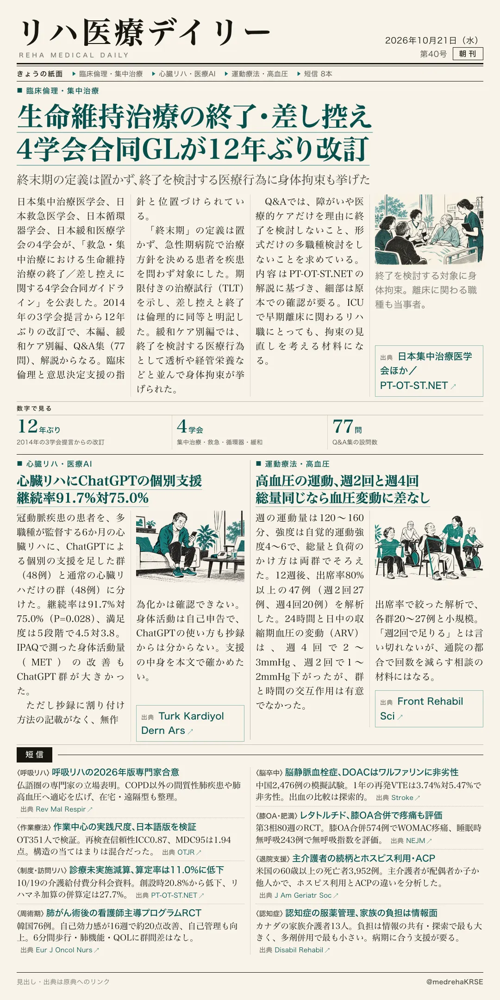
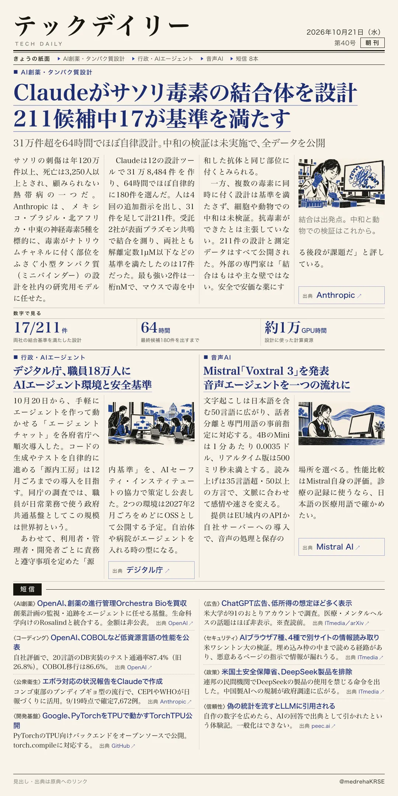

リハ医療デイリー
生命維持治療の終了・差し控え 4学会合同GLが12年ぶり改訂
終末期の定義は置かず、終了を検討する医療行為に身体拘束も挙げた
集中治療・救急・循環器・緩和の4学会が、救急・集中治療での生命維持治療の終了と差し控えに関する合同ガイドラインを公表した。

テックデイリー
Claudeがサソリ毒素の結合体を設計 211候補中17が基準を満たす
31万件超を64時間でほぼ自律設計。中和の検証は未実施で、全データを公開
Anthropicが、社内の研究用モデルにサソリの神経毒素へ結合する小型タンパク質を設計させ、外部の2社で結合を測った結果を公開した。
